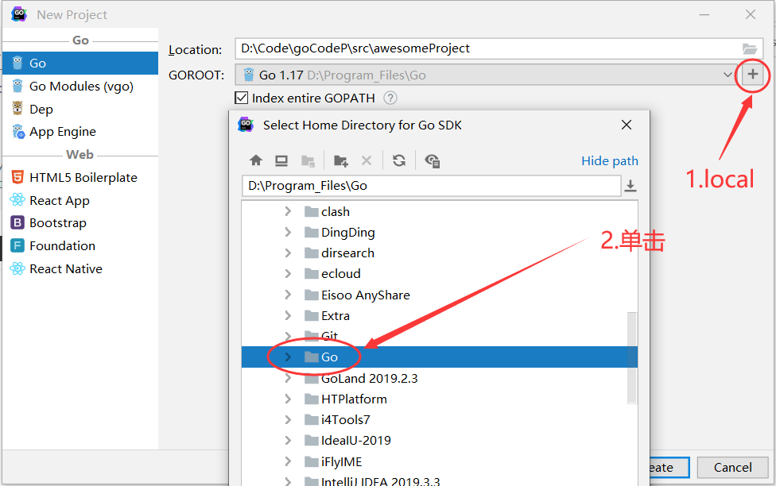
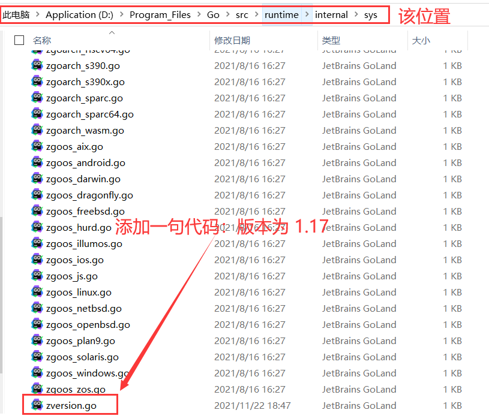
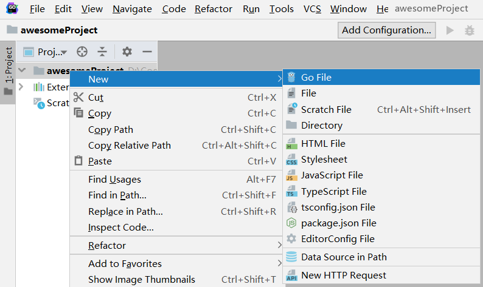
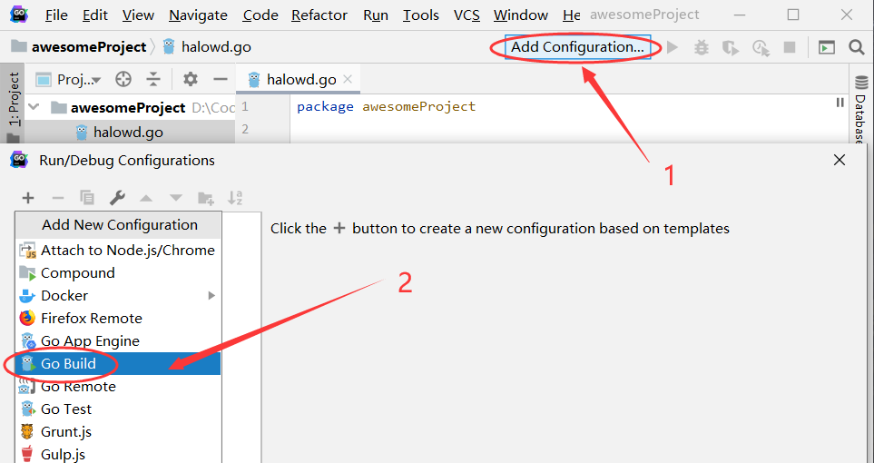
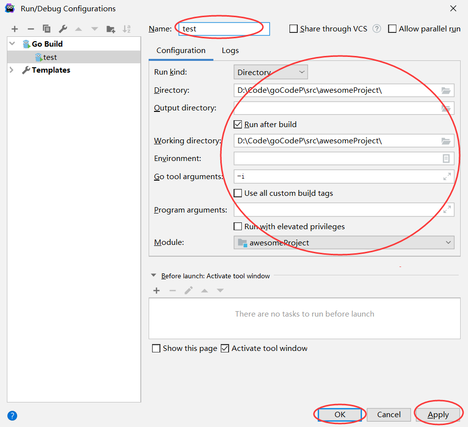
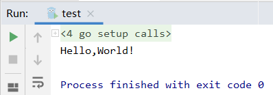

（纯搬运，怕这玩意突然没了）
（某些示例代码额外添加了一些酱油和输出，方便阅读与思考）
运行 Hello,World!
打开GoLand，
new project：

如果本地SDK导入时报错：
找到下图位置（安装Go的文件夹下）：
写入的代码为：
const theVersion = `go1.17`new Go File：
写一个简单的程序：
package awesomeProject
import "fmt"
func main() {
fmt.Println("Hello,World!")
}添加配置：
 - 运行后报错：
go: go.mod file not found in current directory or any parent directory; see ‘go help modules’
- 解决方法：
- 依然报错：
- 解决方法：
package awesomeProject
//修改为
package main
//指定main包时，即可生成一个可执行的exe文件运行成功：
其他
终端输入：go install，会在bin目录下生成一个exe文件，go install -o xxx.exe可指定名称。
跨平台编译
默认我们go build的可执行文件都是当前操作系统可执行的文件，如果我想在windows下编译一个linux下可执行文件，那需要怎么做呢？
只需要指定目标操作系统的平台和处理器架构即可：
SET CGO_ENABLED=0 // 禁用CGO
SET GOOS=linux // 目标平台是linux
SET GOARCH=amd64 // 目标处理器架构是amd64使用了cgo的代码是不支持跨平台编译的
然后再执行go build命令，得到的就是能够在Linux平台运行的可执行文件了。
Mac 下编译 Linux 和 Windows平台 64位 可执行程序：
CGO_ENABLED=0 GOOS=linux GOARCH=amd64 go build
CGO_ENABLED=0 GOOS=windows GOARCH=amd64 go buildLinux 下编译 Mac 和 Windows 平台64位可执行程序：
CGO_ENABLED=0 GOOS=darwin GOARCH=amd64 go build
CGO_ENABLED=0 GOOS=windows GOARCH=amd64 go buildWindows下编译Mac平台64位可执行程序：
SET CGO_ENABLED=0
SET GOOS=darwin
SET GOARCH=amd64
go build变量
声明
语法格式：
var 变量名 变量类型
/////单独声明/////
var name string
var age int
var isOK bool
/////批量声明/////
var(
name string
age int
isOK bool
)
初始化
var 变量名 类型 = 表达式
///////单独赋值////////
var name string = "ifDo7"
var age int = 22
///////批量赋值////////
name, age = "ifDo7", 22👍类型推导
有时候我们会将变量的类型省略，这个时候编译器会根据等号右边的值来推导变量的类型完成初始化。
var name = "ifDo7"
var age = 22短变量声明
在函数内部，可以使用更简略的
:=方式声明并初始化变量。
package main
import (
"fmt"
)
// 全局变量m
var m = 100
func main() {
n := 10
m := 200 // 此处声明局部变量m
fmt.Println(m, n)
}👍匿名变量
在使用多重赋值时，如果想要忽略某个值，可以使用
匿名变量（anonymous variable）。 匿名变量用一个下划线_表示。
例如：
func foo() (int, string) {
return 10, "Q1mi"
}
func main() {
x, _ := foo()
_, y := foo()
fmt.Println("x=", x)
fmt.Println("y=", y)
}匿名变量不占用命名空间，不会分配内存，所以匿名变量之间不存在重复声明。 (在Lua等编程语言里，匿名变量也被叫做哑元变量。)
🔴注意事项：
函数外的每个语句都必须以关键字开始（var、const、func等）
:=不能使用在函数外。_多用于占位，表示忽略值。
常量
常量的声明和变量声明非常类似，只是把
var换成了const，常量在定义的时候必须赋值。
const pi = 3.14159
const e = 2.71828多个常量也可以一起声明：
const (
pi = 3.14159
e = 2.71828
)const同时声明多个常量时，如果省略了值则表示和上面一行的值相同。 例如：
const (
n1 = 100
n2
n3
)上面示例中，常量n1、n2、n3的值都是100。
iota
iota是go语言的常量计数器，只能在常量的表达式中使用。
iota在const关键字出现时将被重置为0。const中每新增一行常量声明将使iota计数一次(iota可理解为const语句块中的行索引)。
使用iota能简化定义，在定义枚举时很有用。
const (
n1 = iota //0
n2 //1
n3 //2
n4 //3
)几个常见的iota示例:
使用_跳过某些值
const (
n1 = iota //0
n2 //1
_
n4 //3
)iota声明中间插队
const (
n1 = iota //0
n2 = 100 //100
n3 = iota //2
n4 //3
)
const n5 = iota //0定义数量级 （这里的<<表示左移操作，1<<10表示将1的二进制表示向左移10位，也就是由1变成了10000000000，也就是十进制的1024。同理2<<2表示将2的二进制表示向左移2位，也就是由10变成了1000，也就是十进制的8。）
const (
_ = iota
KB = 1 << (10 * iota)
MB = 1 << (10 * iota)
GB = 1 << (10 * iota)
TB = 1 << (10 * iota)
PB = 1 << (10 * iota)
)多个iota定义在一行
const (
a, b = iota + 1, iota + 2 //1,2
c, d //2,3
e, f //3,4
)布尔值
Go语言中以bool类型进行声明布尔型数据，布尔型数据只有true（真）和false（假）两个值。
注意：
- 布尔类型变量的默认值为
false。 - Go 语言中不允许将整型强制转换为布尔型.
- 布尔型无法参与数值运算，也无法与其他类型进行转换。
字符串
Go语言中的字符串以原生数据类型出现，使用字符串就像使用其他原生数据类型（int、bool、float32、float64 等）一样。 Go 语言里的字符串的内部实现使用UTF-8编码。 字符串的值为双引号(")中的内容，可以在Go语言的源码中直接添加非ASCII码字符，例如：
s1 := "hello"
s2 := "你好"字符串转义符
Go 语言的字符串常见转义符包含回车、换行、单双引号、制表符等，如下表所示。
| 转义符 | 含义 |
|---|---|
\r |
回车符（返回行首） |
\n |
换行符（直接跳到下一行的同列位置） |
\t |
制表符 |
\' |
单引号 |
\" |
双引号 |
\\ |
反斜杠 |
举个例子，我们要打印一个Windows平台下的一个文件路径：
package main
import (
"fmt"
)
func main() {
fmt.Println("str := \"c:\\Code\\lesson\\go.exe\"")
}多行字符串
Go语言中要定义一个多行字符串时，就必须使用反引号字符：
s1 := `第一行
第二行
第三行
`
fmt.Println(s1)反引号间换行将被作为字符串中的换行，但是所有的转义字符均无效，文本将会原样输出。
字符串的常用操作
| 方法 | 介绍 |
|---|---|
| len(str) | 求长度 |
| +或fmt.Sprintf | 拼接字符串 |
| strings.Split | 分割 |
| strings.contains | 判断是否包含 |
| strings.HasPrefix,strings.HasSuffix | 前缀/后缀判断 |
| strings.Index(),strings.LastIndex() | 子串出现的位置 |
| strings.Join(a[]string, sep string) | join操作 |
byte和rune类型
组成每个字符串的元素叫做“字符”，可以通过遍历或者单个获取字符串元素获得字符。 字符用单引号（’）包裹起来，如：
var a = '中'
var b = 'x'Go 语言的字符有以下两种：
uint8类型，或者叫 byte 型，代表了ASCII码的一个字符。rune类型，代表一个UTF-8字符。
当需要处理中文、日文或者其他复合字符时，则需要用到rune类型。rune类型实际是一个int32。
Go 使用了特殊的 rune 类型来处理 Unicode，让基于 Unicode 的文本处理更为方便，也可以使用 byte 型进行默认字符串处理，性能和扩展性都有照顾。
// 遍历字符串
func traversalString() {
s := "hello沙河"
for i := 0; i < len(s); i++ { //byte
fmt.Printf("%v(%c) ", s[i], s[i])
}
fmt.Println()
for _, r := range s { //rune
fmt.Printf("%v(%c) ", r, r)
}
fmt.Println()
}输出：
104(h) 101(e) 108(l) 108(l) 111(o) 230(æ) 178(²) 153() 230(æ) 178(²) 179(³)
104(h) 101(e) 108(l) 108(l) 111(o) 27801(沙) 27827(河) 因为UTF8编码下一个中文汉字由3~4个字节组成，所以我们不能简单的按照字节去遍历一个包含中文的字符串，否则就会出现上面输出中第一行的结果。
字符串底层是一个byte数组，所以可以和[]byte类型相互转换。字符串是不能修改的 字符串是由byte字节组成，所以字符串的长度是byte字节的长度。 rune类型用来表示utf8字符，一个rune字符由一个或多个byte组成。
修改字符串
要修改字符串，需要先将其转换成[]rune或[]byte，完成后再转换为string。无论哪种转换，都会重新分配内存，并复制字节数组。
func changeString() {
s1 := "big"
// 强制类型转换
byteS1 := []byte(s1)
byteS1[0] = 'p'
fmt.Println(string(byteS1))
s2 := "白萝卜"
runeS2 := []rune(s2)
runeS2[0] = '红'
fmt.Println(string(runeS2))
}类型转换
Go语言中只有强制类型转换，没有隐式类型转换。
该语法只能在两个类型之间支持相互转换的时候使用。
强制类型转换的基本语法如下：
T(表达式)其中，T表示要转换的类型。表达式包括变量、复杂算子和函数返回值等.
比如计算直角三角形的斜边长时使用math包的Sqrt()函数，该函数接收的是float64类型的参数，而变量a和b都是int类型的，这个时候就需要将a和b强制类型转换为float64类型。
func sqrtDemo() {
var a, b = 3, 4
var c int
// math.Sqrt()接收的参数是float64类型，需要强制转换
c = int(math.Sqrt(float64(a*a + b*b)))
fmt.Println(c)
}切片
切片（Slice）是一个拥有相同类型元素的可变长度的序列。它是基于数组类型做的一层封装。它非常灵活，支持自动扩容。
切片是一个引用类型，它的内部结构包含地址、长度和容量。切片一般用于快速地操作一块数据集合。
切片的定义
声明切片类型的基本语法如下：
var name []T其中，
- name：表示变量名
- T：表示切片中的元素类型
举个例子：
func main() {
// 声明切片类型
var a []string //声明一个字符串切片
var b = []int{} //声明一个整型切片并初始化
var c = []bool{false, true} //声明一个布尔切片并初始化
var d = []bool{false, true} //声明一个布尔切片并初始化
fmt.Println(a) //[]
fmt.Println(b) //[]
fmt.Println(c) //[false true]
fmt.Println(a == nil) //true
fmt.Println(b == nil) //false
fmt.Println(c == nil) //false
// fmt.Println(c == d) //切片是引用类型，不支持直接比较，只能和nil比较
}切片的长度和容量
切片拥有自己的长度和容量，我们可以通过使用内置的len()函数求长度，使用内置的cap()函数求切片的容量。
切片表达式
切片表达式从字符串、数组、指向数组或切片的指针构造子字符串或切片。它有两种变体：一种指定low和high两个索引界限值的简单的形式，另一种是除了low和high索引界限值外还指定容量的完整的形式。
简单切片表达式
切片的底层就是一个数组，所以我们可以基于数组通过切片表达式得到切片。 切片表达式中的low和high表示一个索引范围（左包含，右不包含），也就是下面代码中从数组a中选出1<=索引值<4的元素组成切片s，得到的切片长度=high-low，容量等于得到的切片的底层数组的容量。
func main() {
a := [5]int{1, 2, 3, 4, 5}
s := a[1:3] // s := a[low:high]
fmt.Printf("s:%v len(s):%v cap(s):%v\n", s, len(s), cap(s))
}输出：
s:[2 3] len(s):2 cap(s):4为了方便起见，可以省略切片表达式中的任何索引。省略了low则默认为0；省略了high则默认为切片操作数的长度:
a[2:] // 等同于 a[2:len(a)]
a[:3] // 等同于 a[0:3]
a[:] // 等同于 a[0:len(a)] 索引也必须在有效范围内。如果low和high两个指标都是常数，它们必须满足low <= high。如果索引在运行时超出范围，就会发生运行时panic。
func main() {
a := [5]int{1, 2, 3, 4, 5}
s := a[1:3] // s := a[low:high]
fmt.Printf("s:%v len(s):%v cap(s):%v\n", s, len(s), cap(s))
s2 := s[3:4] // 索引的上限是cap(s)而不是len(s)
fmt.Printf("s2:%v len(s2):%v cap(s2):%v\n", s2, len(s2), cap(s2))
}输出：
s:[2 3] len(s):2 cap(s):4
s2:[5] len(s2):1 cap(s2):1完整切片表达式
对于数组，指向数组的指针，或切片a(注意不能是字符串)支持完整切片表达式：
a[low : high : max]上面的代码会构造与简单切片表达式a[low: high]相同类型、相同长度和元素的切片。另外，它会将得到的结果切片的容量设置为max-low。在完整切片表达式中只有第一个索引值（low）可以省略；它默认为0。
func main() {
a := [5]int{1, 2, 3, 4, 5}
t := a[1:3:5]
fmt.Printf("t:%v len(t):%v cap(t):%v\n", t, len(t), cap(t))
}输出结果：
t:[2 3] len(t):2 cap(t):4完整切片表达式需要满足的条件是0 <= low <= high <= max <= cap(a)，其他条件和简单切片表达式相同。
使用make()函数构造切片
我们上面都是基于数组来创建的切片，如果需要动态的创建一个切片，我们就需要使用内置的make()函数，格式如下：
make([]T, size, cap)其中：
- T:切片的元素类型
- size:切片中元素的数量
- cap:切片的容量,默认等于
len，且cap >= len
举个例子：
func main() {
a := make([]int, 2, 10)
fmt.Println(a) //[0 0]
fmt.Println(len(a)) //2
fmt.Println(cap(a)) //10
}上面代码中a的内部存储空间已经分配了10个，但实际上只用了2个。 容量并不会影响当前元素的个数，所以len(a)返回2，cap(a)则返回该切片的容量。
切片的本质
切片的本质就是对底层数组的封装，它包含了三个信息：底层数组的指针、切片的长度（len）和切片的容量（cap）。
举个例子，现在有一个数组a := [8]int{0, 1, 2, 3, 4, 5, 6, 7}，切片s1 := a[:5]，相应示意图如下。 切片
切片s2 := a[3:6]，相应示意图如下：
判断切片是否为空
要检查切片是否为空，请始终使用
len(s) == 0来判断，而不应该使用s == nil来判断。
切片不能直接比较
切片之间是不能比较的，我们不能使用==操作符来判断两个切片是否含有全部相等元素。
切片唯一合法的比较操作是和nil比较。
一个nil值的切片并没有底层数组，一个nil值的切片的长度和容量都是0。
但是我们不能说一个长度和容量都是0的切片一定是nil，例如下面的示例：
var s1 []int //len(s1)=0;cap(s1)=0;s1==nil
s2 := []int{} //len(s2)=0;cap(s2)=0;s2!=nil
s3 := make([]int, 0) //len(s3)=0;cap(s3)=0;s3!=nil所以要判断一个切片是否是空的，要是用len(s) == 0来判断，不应该使用s == nil来判断。
切片的赋值拷贝
下面的代码中演示了拷贝前后两个变量共享底层数组，对一个切片的修改会影响另一个切片的内容，这点需要特别注意。
func main() {
s1 := make([]int, 3) //[0 0 0]
s2 := s1 //将s1直接赋值给s2，s1和s2共用一个底层数组
s2[0] = 100
fmt.Println(s1) //[100 0 0]
fmt.Println(s2) //[100 0 0]
}切片遍历
切片的遍历方式和数组是一致的，支持索引遍历和for range遍历。
func main() {
s := []int{1, 3, 5}
for i := 0; i < len(s); i++ {
fmt.Println(i, s[i])
}
for index, value := range s {
fmt.Println(index, value)
}
}append()方法为切片添加元素
Go语言的内建函数append()可以为切片动态添加元素。 可以一次添加一个元素，可以添加多个元素，也可以添加另一个切片中的元素（后面加…）。
func main(){
var s []int
s = append(s, 1) // [1]
s = append(s, 2, 3, 4) // [1 2 3 4]
s2 := []int{5, 6, 7}
s = append(s, s2...) // [1 2 3 4 5 6 7]
}注意：通过var声明的零值切片可以在append()函数直接使用，无需初始化。
var s []int
s = append(s, 1, 2, 3)没有必要像下面的代码一样初始化一个切片再传入append()函数使用，
s := []int{} // 没有必要初始化
s = append(s, 1, 2, 3)
var s = make([]int) // 没有必要初始化
s = append(s, 1, 2, 3)每个切片会指向一个底层数组，这个数组的容量够用就添加新增元素。当底层数组不能容纳新增的元素时，切片就会自动按照一定的策略进行“扩容”，此时该切片指向的底层数组就会更换。
“扩容”操作往往发生在append()函数调用时，所以我们通常都需要用原变量接收append函数的返回值。
举个例子：
func main() {
//append()添加元素和切片扩容
var numSlice []int
for i := 0; i < 10; i++ {
numSlice = append(numSlice, i)
fmt.Printf("%v len:%d cap:%d ptr:%p\n", numSlice, len(numSlice), cap(numSlice), numSlice)
}
}输出：
[0] len:1 cap:1 ptr:0xc0000120d0
[0 1] len:2 cap:2 ptr:0xc0000120e0
[0 1 2] len:3 cap:4 ptr:0xc00000c240
[0 1 2 3] len:4 cap:4 ptr:0xc00000c240
[0 1 2 3 4] len:5 cap:8 ptr:0xc0000102c0
[0 1 2 3 4 5] len:6 cap:8 ptr:0xc0000102c0
[0 1 2 3 4 5 6] len:7 cap:8 ptr:0xc0000102c0
[0 1 2 3 4 5 6 7] len:8 cap:8 ptr:0xc0000102c0
[0 1 2 3 4 5 6 7 8] len:9 cap:16 ptr:0xc000120000
[0 1 2 3 4 5 6 7 8 9] len:10 cap:16 ptr:0xc000120000从上面的结果可以看出：
append()函数将元素追加到切片的最后并返回该切片。- 切片numSlice的容量按照1，2，4，8，16这样的规则自动进行扩容，每次扩容后都是扩容前的2倍。
append()函数还支持一次性追加多个元素。 例如：
var citySlice []string
// 追加一个元素
citySlice = append(citySlice, "北京")
// 追加多个元素
citySlice = append(citySlice, "上海", "广州", "深圳")
// 追加切片
a := []string{"成都", "重庆"}
citySlice = append(citySlice, a...)
fmt.Println(citySlice) //[北京 上海 广州 深圳 成都 重庆]切片的扩容策略
可以通过查看$GOROOT/src/runtime/slice.go源码，其中扩容相关代码如下：
newcap := old.cap
doublecap := newcap + newcap
if cap > doublecap {
newcap = cap
} else {
if old.len < 1024 {
newcap = doublecap
} else {
// Check 0 < newcap to detect overflow
// and prevent an infinite loop.
for 0 < newcap && newcap < cap {
newcap += newcap / 4
}
// Set newcap to the requested cap when
// the newcap calculation overflowed.
if newcap <= 0 {
newcap = cap
}
}
}从上面的代码可以看出以下内容：
- 首先判断，如果新申请容量（cap）大于2倍的旧容量（old.cap），最终容量（newcap）就是新申请的容量（cap）。
- 否则判断，如果旧切片的长度小于1024，则最终容量(newcap)就是旧容量(old.cap)的两倍，即（newcap=doublecap），
- 否则判断，如果旧切片长度大于等于1024，则最终容量（newcap）从旧容量（old.cap）开始循环增加原来的1/4，即（newcap=old.cap,for {newcap += newcap/4}）直到最终容量（newcap）大于等于新申请的容量(cap)，即（newcap >= cap）
- 如果最终容量（cap）计算值溢出，则最终容量（cap）就是新申请容量（cap）。
需要注意的是，切片扩容还会根据切片中元素的类型不同而做不同的处理，比如int和string类型的处理方式就不一样。
使用copy()函数复制切片
首先我们来看一个问题：
func main() {
a := []int{1, 2, 3, 4, 5}
b := a
fmt.Println(a) //[1 2 3 4 5]
fmt.Println(b) //[1 2 3 4 5]
b[0] = 1000
fmt.Println(a) //[1000 2 3 4 5]
fmt.Println(b) //[1000 2 3 4 5]
}由于切片是引用类型，所以a和b其实都指向了同一块内存地址。修改b的同时a的值也会发生变化。
Go语言内建的copy()函数可以迅速地将一个切片的数据复制到另外一个切片空间中，copy()函数的使用格式如下：
copy(destSlice, srcSlice []T)其中：
- srcSlice: 数据来源切片
- destSlice: 目标切片
举个例子：
func main() {
// copy()复制切片
a := []int{1, 2, 3, 4, 5}
c := make([]int, 5, 5)
copy(c, a) //使用copy()函数将切片a中的元素复制到切片c
fmt.Println(a) //[1 2 3 4 5]
fmt.Println(c) //[1 2 3 4 5]
c[0] = 1000
fmt.Println(a) //[1 2 3 4 5]
fmt.Println(c) //[1000 2 3 4 5]
}从切片中删除元素
Go语言中并没有删除切片元素的专用方法，我们可以使用切片本身的特性来删除元素。 代码如下：
func main() {
// 从切片中删除元素
a := []int{30, 31, 32, 33, 34, 35, 36, 37}
// 要删除索引为2的元素
a = append(a[:2], a[3:]...)
fmt.Println(a) //[30 31 33 34 35 36 37]
}总结一下就是：要从切片a中删除索引为index的元素，操作方法是a = append(a[:index], a[index+1:]...)
map
map是一种无序的基于key-value的数据结构，Go语言中的map是引用类型，必须初始化才能使用。
map定义
Go语言中 map的定义语法如下：
map[KeyType]ValueType其中，
- KeyType:表示键的类型。
- ValueType:表示键对应的值的类型。
map类型的变量默认初始值为nil，需要使用make()函数来分配内存。语法为：
make(map[KeyType]ValueType, [cap])其中cap表示map的容量，该参数虽然不是必须的，但是我们应该在初始化map的时候就为其指定一个合适的容量。
map基本使用
map中的数据都是成对出现的，map的基本使用示例代码如下：
func main() {
scoreMap := make(map[string]int, 8)
scoreMap["张三"] = 90
scoreMap["小明"] = 100
fmt.Println(scoreMap)
fmt.Println(scoreMap["小明"])
fmt.Printf("type of a:%T\n", scoreMap)
}输出：
map[小明:100 张三:90]
100
type of a:map[string]intmap也支持在声明的时候填充元素，例如：
func main() {
userInfo := map[string]string{
"username": "沙河小王子",
"password": "123456",
}
fmt.Println(userInfo) //
}判断某个键是否存在
Go语言中有个判断map中键是否存在的特殊写法，格式如下:
value, ok := map[key]举个例子：
func main() {
scoreMap := make(map[string]int)
scoreMap["张三"] = 90
scoreMap["小明"] = 100
// 如果key存在ok为true,v为对应的值；不存在ok为false,v为值类型的零值
v, ok := scoreMap["张三"]
if ok {
fmt.Println(v)
} else {
fmt.Println("查无此人")
}
}map的遍历
Go语言中使用for range遍历map。
func main() {
scoreMap := make(map[string]int)
scoreMap["张三"] = 90
scoreMap["小明"] = 100
scoreMap["娜扎"] = 60
for k, v := range scoreMap {
fmt.Println(k, v)
}
}但我们只想遍历key的时候，可以按下面的写法：
func main() {
scoreMap := make(map[string]int)
scoreMap["张三"] = 90
scoreMap["小明"] = 100
scoreMap["娜扎"] = 60
for k := range scoreMap {
fmt.Println(k)
}
}注意：
遍历map时的元素顺序与添加键值对的顺序无关。
//输出
娜扎
张三
小明使用delete()函数删除键值对
使用delete()内建函数从map中删除一组键值对，delete()函数的格式如下：
delete(map, key)其中，
- map:表示要删除键值对的map
- key:表示要删除的键值对的键
示例代码如下：
func main(){
scoreMap := make(map[string]int)
scoreMap["张三"] = 90
scoreMap["小明"] = 100
scoreMap["娜扎"] = 60
delete(scoreMap, "小明")//将小明:100从map中删除
for k,v := range scoreMap{
fmt.Println(k, v)
}
}按照指定顺序遍历map
func main() {
rand.Seed(time.Now().UnixNano()) //初始化随机数种子
var scoreMap = make(map[string]int, 200)
for i := 0; i < 100; i++ {
key := fmt.Sprintf("stu%02d", i) //生成stu开头的字符串
value := rand.Intn(100) //生成0~99的随机整数
scoreMap[key] = value
}
//取出map中的所有key存入切片keys
var keys = make([]string, 0, 200)
for key := range scoreMap {
keys = append(keys, key)
}
//对切片进行排序
sort.Strings(keys)
//按照排序后的key遍历map
for _, key := range keys {
fmt.Println(key, scoreMap[key])
}
}元素为map类型的切片
下面的代码演示了切片中的元素为map类型时的操作：
func main() {
var mapSlice = make([]map[string]string, 3)
for index, value := range mapSlice {
fmt.Printf("index:%d value:%v\n", index, value)
}
fmt.Println("after init")
// 对切片中的map元素进行初始化
mapSlice[0] = make(map[string]string, 10)
mapSlice[0]["name"] = "小王子"
mapSlice[0]["password"] = "123456"
mapSlice[0]["address"] = "沙河"
for index, value := range mapSlice {
fmt.Printf("index:%d value:%v\n", index, value)
}
}值为切片类型的map
下面的代码演示了map中值为切片类型的操作：
func main() {
var sliceMap = make(map[string][]string, 3)
fmt.Println(sliceMap)
fmt.Println("after init")
key := "中国"
value, ok := sliceMap[key]
if !ok {
value = make([]string, 0, 2)
}
value = append(value, "北京", "上海")
sliceMap[key] = value
fmt.Println(sliceMap)
}练习
//1.写一个程序，统计一个字符串中每个单词出现的次数。比如：”how do you do”中how=1 do=2 you=1
func main() {
words := "how do you do"
splits := strings.Split(words, " ")
result := make(map[string]int, 8)
for _, v := range splits {
result[v] = result[v] + 1
}
fmt.Println(result)
}
//输出：map[do:2 how:1 you:1]函数
Go语言中支持函数、匿名函数和闭包，并且函数在Go语言中属于“一等公民”。
函数定义
Go语言中定义函数使用func关键字，具体格式如下：
func 函数名(参数)(返回值){
函数体
}其中：
- 函数名：由字母、数字、下划线组成。但函数名的第一个字母不能是数字。在同一个包内，函数名也称不能重名。
- 参数：参数由参数变量和参数变量的类型组成，多个参数之间使用
,分隔。 - 返回值：返回值由返回值变量和其变量类型组成，也可以只写返回值的类型，多个返回值必须用
()包裹，并用,分隔。 - 函数体：实现指定功能的代码块。
我们先来定义一个求两个数之和的函数：
func intSum(x int, y int) int {
return x + y
}函数的参数和返回值都是可选的，例如我们可以实现一个既不需要参数也没有返回值的函数：
func sayHello() {
fmt.Println("Hello 沙河")
}函数的调用
定义了函数之后，我们可以通过函数名()的方式调用函数。 例如我们调用上面定义的两个函数，代码如下：
func main() {
sayHello()
ret := intSum(10, 20)
fmt.Println(ret)
}注意，调用有返回值的函数时，可以不接收其返回值。
参数
类型简写
函数的参数中如果相邻变量的类型相同，则可以省略类型，例如：
func intSum(x, y int) int {
return x + y
}上面的代码中，intSum 函数有两个参数，这两个参数的类型均为int，因此可以省略x的类型，因为y后面有类型说明，x参数也是该类型。
可变参数
可变参数是指函数的参数数量不固定。Go语言中的可变参数通过在参数名后加...来标识。
注意：可变参数通常要作为函数的最后一个参数。
举个例子：
func intSum2(x ...int) int {
fmt.Println(x) //x是一个切片
sum := 0
for _, v := range x {
sum = sum + v
}
return sum
}调用上面的函数：
ret1 := intSum2()
ret2 := intSum2(10)
ret3 := intSum2(10, 20)
ret4 := intSum2(10, 20, 30)
fmt.Println(ret1, ret2, ret3, ret4) //0 10 30 60固定参数搭配可变参数使用时，可变参数要放在固定参数的后面，示例代码如下：
func intSum3(x int, y ...int) int {
fmt.Println(x, y)
sum := x
for _, v := range y {
sum = sum + v
}
return sum
}调用上述函数：
ret5 := intSum3(100)
ret6 := intSum3(100, 10)
ret7 := intSum3(100, 10, 20)
ret8 := intSum3(100, 10, 20, 30)
fmt.Println(ret5, ret6, ret7, ret8) //100 110 130 160本质上，函数的可变参数是通过切片来实现的。
👍返回值
Go语言中通过return关键字向外输出返回值。
多返回值
Go语言中函数支持多返回值，函数如果有多个返回值时必须用
()将所有返回值包裹起来。
举个例子：
func calc(x, y int) (int, int) {
sum := x + y
sub := x - y
return sum, sub
}返回值命名
函数定义时可以给返回值命名，并在函数体中直接使用这些变量，最后通过return关键字返回。
例如：
func calc(x, y int) (sum, sub int) {
sum = x + y
sub = x - y
return
}返回值补充
当我们的一个函数返回值类型为slice时，nil可以看做是一个有效的slice，没必要显示返回一个长度为0的切片。
func someFunc(x string) []int {
if x == "" {
return nil // 没必要返回[]int{}
}
...
}函数进阶
函数类型与变量
定义函数类型
我们可以使用type关键字来定义一个函数类型，具体格式如下：
type calculation func(int, int) int上面语句定义了一个calculation类型，它是一种函数类型，这种函数接收两个int类型的参数并且返回一个int类型的返回值。
简单来说，凡是满足这个条件的函数都是calculation类型的函数，例如下面的add和sub是calculation类型。
func add(x, y int) int {
return x + y
}
func sub(x, y int) int {
return x - y
}add和sub都能赋值给calculation类型的变量。
var c calculation
c = add函数类型变量
我们可以声明函数类型的变量并且为该变量赋值：
func main() {
var c calculation // 声明一个calculation类型的变量c
c = add // 把add赋值给c
fmt.Printf("type of c:%T\n", c) // type of c:main.calculation
fmt.Println(c(1, 2)) // 像调用add一样调用c
f := add // 将函数add赋值给变量f1
fmt.Printf("type of f:%T\n", f) // type of f:func(int, int) int
fmt.Println(f(10, 20)) // 像调用add一样调用f
}高阶函数
高阶函数分为函数作为参数和函数作为返回值两部分。
函数作为参数
函数可以作为参数：
func add(x, y int) int {
return x + y
}
func calc(x, y int, op func(int, int) int) int {
return op(x, op(x, y))
}
func main() {
ret2 := calc(10, 20, add)
fmt.Println(ret2) //40
}函数作为返回值
函数也可以作为返回值：
func add(x, y int) int {
return x + y
}
func sub(x, y int) int {
return x - y
}
func do(s string) (func(int, int) int, error) {
switch s {
case "+":
return add, nil
case "-":
return sub, nil
default:
err := errors.New("无法识别的操作符")
return nil, err
}
}
func main() {
c,d := do("-") //此时c就是sub函数
fmt.Println(c(2,1)，d) //c(b,a)就是sub(b,a)
}
//输出：1 <nil>匿名函数和闭包
匿名函数
函数当然还可以作为返回值，但是在Go语言中函数内部不能再像之前那样定义函数了，只能定义匿名函数。
匿名函数就是没有函数名的函数，匿名函数的定义格式如下：
func(参数)(返回值){
函数体
}匿名函数因为没有函数名，所以没办法像普通函数那样调用，所以匿名函数需要保存到某个变量或者作为立即执行函数:
func main() {
// 将匿名函数保存到变量
add := func(x, y int) {
fmt.Println(x + y)
}
add(10, 20) // 通过变量调用匿名函数
//自执行函数：匿名函数定义完加()直接执行
func(x, y int) {
fmt.Println(x + y)
}(10, 20)
}👍匿名函数多用于实现回调函数和闭包。
闭包
闭包指的是一个函数和与其相关的引用环境组合而成的实体。
简单来说，闭包 = 函数 + 引用环境。
首先我们来看一个例子：
func adder() func(int) int {
var x int
fmt.Println(x,"\n***** closing *****")
return func(y int) int {
fmt.Println(y)
x += y
fmt.Println("--------------")
return x
}
}
func main() {
f := adder()
fmt.Println("print->", f(10)) //10
fmt.Println("print->", f(20)) //30
fmt.Println("print->", f(30)) //60
fmt.Println("$$$$$ new game $$$$$")
f1 := adder()
fmt.Println("print->", f1(40)) //40
fmt.Println("print->", f1(50)) //90
}输出：
0
***** closing *****
10
--------------
print-> 10
20
--------------
print-> 30
30
--------------
print-> 60
$$$$$ new game $$$$$
0
***** closing *****
40
--------------
print-> 40
50
--------------
print-> 90变量f是一个函数并且它引用了其外部作用域中的x变量，此时f就是一个闭包。 在f的生命周期内，变量x也一直有效。 闭包进阶示例1：
func adder2(x int) func(int) int {
return func(y int) int {
x += y
return x
}
}
func main() {
var f = adder2(10)
fmt.Println(f(10)) //20
fmt.Println(f(20)) //40
fmt.Println(f(30)) //70
f1 := adder2(20)
fmt.Println(f1(40)) //60
fmt.Println(f1(50)) //110
}闭包进阶示例2：
func makeSuffixFunc(suffix string) func(string) string {
return func(name string) string {
if !strings.HasSuffix(name, suffix) {
return name + suffix
}
return name
}
}
func main() {
jpgFunc := makeSuffixFunc(".jpg")
txtFunc := makeSuffixFunc(".txt")
fmt.Println(jpgFunc("test")) //test.jpg
fmt.Println(txtFunc("test")) //test.txt
}闭包进阶示例3：
func calc(base int) (func(int) int, func(int) int) {
add := func(i int) int {
base += i
return base
}
sub := func(i int) int {
base -= i
return base
}
return add, sub
}
func main() {
f1, f2 := calc(10)
fmt.Println(f1(1), f2(2)) //11 9
fmt.Println(f1(3), f2(4)) //12 8
fmt.Println(f1(5), f2(6)) //13 7
}闭包其实并不复杂，只要牢记闭包=函数+引用环境。
defer延迟语句
Go语言中的defer语句会将其后面跟随的语句进行延迟处理。在defer归属的函数即将返回时，将延迟处理的语句按defer定义的逆序进行执行，也就是说，先被defer的语句最后被执行，最后被defer的语句，最先被执行。
举个例子：
func main() {
fmt.Println("start")
defer fmt.Println(1)
defer fmt.Println(2)
defer fmt.Println(3)
fmt.Println("end")
}输出结果：
start
end
3
2
1由于defer语句延迟调用的特性，所以defer语句能非常方便的处理资源释放问题。比如：资源清理、文件关闭、解锁及记录时间等。
defer执行时机
在Go语言的函数中return语句在底层分为给返回值赋值和RET指令两步。
而defer语句执行的时机就在返回值赋值操作后，RET指令执行前。
延迟调用是在 defer 所在函数结束时进行，函数结束可以是正常返回时，也可以是发生宕机时。
具体如下图所示：
defer经典案例
阅读下面的代码，写出最后的打印结果。
func f1() int {
x := 12
defer func() {
x++
}()
return x
}
func f2() (x int) {
defer func() {
x++
}()
return 5
}
func f3() (y int) {
x := 23
defer func() {
x++
}()
return x
}
func f4() (x int) {
defer func(x int) {
x++
}(x)
return 5
}
func main() {
fmt.Println(f1())
fmt.Println(f2())
fmt.Println(f3())
fmt.Println(f4())
}
//12 6 23 5defer面试题
func calc(index string, a, b int) int {
ret := a + b
fmt.Println(index, a, b, ret)
return ret
}
func main() {
x := 1
y := 2
defer calc("AA", x, calc("A", x, y))
x = 10
defer calc("BB", x, calc("B", x, y))
y = 20
}
// A 1 2 3
// B 10 2 12
// BB 10 12 22
// AA 1 3 4问，上面代码的输出结果是？（提示：defer注册要延迟执行的函数时该函数所有的参数都需要确定其值）
内置函数介绍
| 内置函数 | 介绍 |
|---|---|
| close | 主要用来关闭channel |
| len | 用来求长度，比如string、array、slice、map、channel |
| new | 用来分配内存，主要用来分配值类型，比如int、struct。返回的是指针 |
| make | 用来分配内存，主要用来分配引用类型，比如chan、map、slice |
| append | 用来追加元素到数组、slice中 |
| panic和recover | 用来做错误处理 |
panic/recover
Go语言中目前（Go1.12）是没有异常机制，但是使用panic/recover模式来处理错误。
panic可以在任何地方引发，但recover只有在defer调用的函数中有效。
首先来看一个例子：
func funcA() {
fmt.Println("func A")
}
func funcB() {
panic("panic in B")
}
func funcC() {
fmt.Println("func C")
}
func main() {
funcA()
funcB()
funcC()
}输出：
func A
panic: panic in B
goroutine 1 [running]:
main.funcB(...)
.../code/func/main.go:12
main.main()
.../code/func/main.go:20 +0x98程序运行期间funcB中引发了panic导致程序崩溃，异常退出了。这个时候我们就可以通过recover将程序恢复回来，继续往后执行。
func funcA() {
fmt.Println("func A")
}
func funcB() {
defer func() {
err := recover()
//如果程序出出现了panic错误,可以通过recover恢复过来
if err != nil {
fmt.Println("recover in B")
}
}()
panic("panic in B")
}
func funcC() {
fmt.Println("func C")
}
func main() {
funcA()
funcB()
funcC()
}注意：
recover()必须搭配defer使用。defer一定要在可能引发panic的语句之前定义。
练习
分金币
/*
你有50枚金币，需要分配给以下几个人：Mattheiouw,Sarah,Augustus,Heidi,Emilie,Peter,Giana,Adriano,Aaron,Elizabeth。
分配规则如下：
a. 名字中每包含1个'e'或'E'分1枚金币
b. 名字中每包含1个'i'或'I'分2枚金币
c. 名字中每包含1个'o'或'O'分3枚金币
d: 名字中每包含1个'u'或'U'分4枚金币
写一个程序，计算每个用户分到多少金币，以及最后剩余多少金币？
程序结构如下，请实现 ‘dispatchCoin’ 函数
*/
var (
coins = 50
users = []string{
"Mattheiouw", "Sarah", "Augustus", "Heidi", "Emilie", "Peter", "Giana", "Adriano", "Aaron", "Elizabeth",
}
distribution = make(map[string]int, len(users))
)
func main() {
left := dispatchCoin(coins)
fmt.Println("金币剩余：", left)
}实现：
//‘dispatchCoin’ 函数实现
func dispatchCoin(coins int) int {
for _, name := range users {
for _, v := range strings.Split(name, "") {
switch {
//switch 中的表达式是可选的，可以省略。
//如果省略表达式，则相当于 switch true，这种情况下会将每一个 case 的表达式的求值结果与 true 做比较。
//如果相等，则执行相应的代码。
case v == "e" || v == "E":
distribution[name]++ //即其value/记录分得的coins值+1
coins-- //金币总量减少对应值
case v == "i" || v == "I":
distribution[name] += 2 //即其value值+2
coins -= 2
case v == "o" || v == "O":
distribution[name] += 3 //即其value值+3
coins -= 3
case v == "u" || v == "U":
distribution[name] += 4 //即其value值+4
coins -= 4
}
}
}
for key, value := range distribution {
fmt.Println(key,"\tGet the number of coins:\t$",value)
}
return coins
}输出：
Mattheiouw Get the number of coins: $ 10
Heidi Get the number of coins: $ 5
Giana Get the number of coins: $ 2
Adriano Get the number of coins: $ 5
Elizabeth Get the number of coins: $ 4
Augustus Get the number of coins: $ 12
Emilie Get the number of coins: $ 6
Peter Get the number of coins: $ 2
Aaron Get the number of coins: $ 3
金币剩余： 1for range循环遍历
for range 结构是Go语言特有的一种的迭代结构，在许多情况下都非常有用，for range 可以遍历数组、切片、字符串、map 及通道（channel），for range 语法上类似于其它语言中的 foreach 语句，一般形式为：
for key, value := range arr {
...
}参数
| 参数 | 描述 |
|---|---|
| for | for range 循环使用的关键字。 |
| key | for range 循环返回的数组的索引。 |
| value | for range 循环返回数组的值的拷贝。 |
| range | for range 循环使用的关键字。 |
| arr | for range 循环需要遍历的数组数据。 |
需要要注意的是，val 始终为集合中对应索引的值拷贝，因此它一般只具有只读性质，对它所做的任何修改都不会影响到集合中原有的值。一个字符串是 Unicode 编码的字符（或称之为 rune ）集合，因此也可以用它来迭代字符串：
for pos, char := range str {
...
}每个 rune 字符和索引在 for range 循环中是一一对应的，它能够自动根据 UTF-8 规则识别 Unicode 编码的字符。
通过 for range 遍历的返回值有一定的规律：
- 数组、切片、字符串返回索引和值。
- map 返回键和值。
- 通道（channel）只返回通道内的值。
遍历数组、切片——获得索引和值
在遍历代码中，key 和 value 分别代表切片的下标及下标对应的值，下面的代码展示如何遍历切片，数组也是类似的遍历方法：
for key, value := range []int{1, 2, 3, 4} {
fmt.Printf("key:%d value:%d\n", key, value)
}代码输出如下：
key:0 value:1
key:1 value:2
key:2 value:3
key:3 value:4遍历字符串——获得字符
Go语言和其他语言类似，可以通过 for range 的组合，对字符串进行遍历，遍历时，key 和 value 分别代表字符串的索引和字符串中的每一个字符。
下面这段代码展示了如何遍历字符串：
var str = "hello 你好"
for key, value := range str {
fmt.Printf("key:%d value:0x%x\n", key, value)
}代码输出如下：
key:0 value:0x68
key:1 value:0x65
key:2 value:0x6c
key:3 value:0x6c
key:4 value:0x6f
key:5 value:0x20
key:6 value:0x4f60
key:9 value:0x597d代码中的变量 value，实际类型是 rune 类型，以十六进制打印出来就是字符的编码。
遍历 map——获得 map 的键和值
对于 map 类型来说，for range 遍历时，key 和 value 分别代表 map 的索引键 key 和索引对应的值，一般被称为 map 的键值对，因为它们是一对一对出现的，下面的代码演示了如何遍历 map。
m := map[string]int{
"hello": 100,
"world": 200,
}
for key, value := range m {
fmt.Println(key, value)
}代码输出如下：
hello 100
world 200注意
对 map 遍历时，遍历输出的键值是无序的，如果需要有序的键值对输出，需要对结果进行排序。
遍历通道（channel）——接收通道数据
for range 可以遍历通道（channel），但是通道在遍历时，只输出一个值，即管道内的类型对应的数据。
下面代码为我们展示了通道的遍历：
c := make(chan int)
go func() {
c <- 1
c <- 2
c <- 3
close(c)
}()
for v := range c {
fmt.Println(v)
}代码说明如下：
- 第 1 行创建了一个整型类型的通道。
- 第 3 行启动了一个 goroutine，其逻辑的实现体现在第 5～8 行，实现功能是往通道中推送数据 1、2、3，然后结束并关闭通道。
- 这段 goroutine 在声明结束后，在第 9 行马上被执行。
- 从第 11 行开始，使用 for range 对通道 c 进行遍历，其实就是不断地从通道中取数据，直到通道被关闭。
在遍历中选择希望获得的变量
在使用 for range 循环遍历某个对象时，一般不会同时需要 key 或者 value，这个时候可以采用一些技巧，让代码变得更简单，下面将前面的例子修改一下，参考下面的代码示例：
m := map[string]int{
"hello": 100,
"world": 200,
}
for _, value := range m {
fmt.Println(value)
}代码输出如下：
100
200在上面的例子中将 key 变成了下划线_，这里的下划线就是匿名变量。
- 可以理解为一种占位符。
- 匿名变量本身不会进行空间分配，也不会占用一个变量的名字。
- 在 for range 可以对 key 使用匿名变量，也可以对 value 使用匿名变量。
再看一个匿名变量的例子：
for key, _ := range []int{1, 2, 3, 4} {
fmt.Printf("key:%d \n", key)
}代码输出如下：
key:0
key:1
key:2
key:3在该例子中，value 被设置为匿名变量，只使用 key，而 key 本身就是切片的索引，所以例子输出索引。
我们总结一下 for 的功能：
- Go语言的 for 包含初始化语句、条件表达式、结束语句，这 3 个部分均可缺省。
- for range 支持对数组、切片、字符串、map、通道进行遍历操作。
- 在需要时，可以使用匿名变量对 for range 的变量进行选取。
Go语言中的指针
区别于C/C++中的指针，Go语言中的指针不能进行偏移和运算，是安全指针。
3个概念：指针地址、指针类型 和 指针取值。
任何程序数据载入内存后，在内存都有他们的地址，这就是指针。
而为了保存一个数据在内存中的地址，我们就需要指针变量。
比如，“永远不要高估自己”这句话是我的座右铭，我想把它写入程序中，程序一启动这句话是要加载到内存（假设内存地址0x123456），我在程序中把这段话赋值给变量A，把内存地址赋值给变量B。这时候变量B就是一个指针变量。通过变量A和变量B都能找到我的座右铭。
Go语言中的指针不能进行偏移和运算，因此Go语言中的指针操作非常简单，只需要记住两个符号：&（取地址）和*（根据地址取值）。
指针地址和指针类型
每个变量在运行时都拥有一个地址，这个地址代表变量在内存中的位置。Go语言中使用&字符放在变量前面对变量进行“取地址”操作。
Go语言中的值类型（int、float、bool、string、array、struct）都有对应的指针类型，如：*int、*int64、*string等。
取变量指针的语法如下：
ptr := &v // v的类型为T其中：
- v:代表被取地址的变量，类型为
T - ptr:用于接收地址的变量，ptr的类型就为
*T，称做T的指针类型。*代表指针。
举个例子：
func main() {
a := 10
b := &a
fmt.Printf("a:%d ptr:%p\n", a, &a) // a:10 ptr:0xc00000a0c0
fmt.Printf("b:%p type:%T\n", b, b) // b:0xc00000a0c0 type:*int
fmt.Println(&b) // 0xc000006030
}0xc000006030 中存着的数据为：变量a的地址0xc00000a0c0
指针取值
在对普通变量使用&操作符取地址后会获得这个变量的指针，然后可以对指针使用*操作，也就是指针取值，代码如下。
func main() {
//指针取值
a := 10
b := &a // 取变量a的地址，将指针保存到b中
fmt.Printf("type of b:%T\n", b)
c := *b // 指针取值（根据指针去内存取值）
fmt.Printf("type of c:%T\n", c)
fmt.Printf("value of c:%v\n", c)
}输出如下：
type of b:*int
type of c:int
value of c:10总结： 取地址操作符&和取值操作符*是一对互补操作符，&取出地址，*根据地址取出地址指向的值。
变量、指针地址、指针变量、取地址、取值的相互关系和特性如下：
- 对变量进行取地址（&）操作，可以获得这个变量的指针变量。
- 指针变量的值是指针地址。
- 对指针变量进行取值（*）操作，可以获得指针变量指向的原变量的值。
指针传值示例：
func modify1(x int) {
x = 100
}
func modify2(x *int) {
*x = 100
}
func main() {
a := 10
modify1(a)
fmt.Println(a) // 将a的值赋值给x，并没有改变a，故输出：10
modify2(&a)
fmt.Println(a) // 将a的地址给x，将x所指向的地址处的值修改，故输出：100
}new和make
我们先来看一个例子：
func main() {
var a *int
*a = 100
fmt.Println(*a)
var b map[string]int
b["沙河娜扎"] = 100
fmt.Println(b)
}执行上面的代码会引发panic，为什么呢？
在Go语言中对于引用类型的变量，我们在使用的时候不仅要声明它，还要为它分配内存空间，否则我们的值就没办法存储。
而对于值类型的声明不需要分配内存空间，是因为它们在声明的时候已经默认分配好了内存空间。要分配内存，就引出来new和make。 Go语言中new和make是内建的两个函数，主要用来分配内存。
可修改代码如下：
func main() {
a := new(int)
*a = 100
fmt.Println(*a) //100
b := make(map[string]int ,10)
b["沙河娜扎"] = 100
fmt.Println(b) //map[沙河娜扎:100]
}- 声明
- var
- 分配内存
- new
- make
- 使用
new
new是一个内置的函数，它的函数签名如下：
func new(Type) *Type其中，
- Type表示类型，new函数只接受一个参数，这个参数是一个类型
- *Type表示类型指针，new函数返回一个指向该类型内存地址的指针。
new函数不太常用，使用new函数得到的是一个类型的指针，并且该指针对应的值为该类型的零值。举个例子：
func main() {
a := new(int)
b := new(bool)
fmt.Printf("%T\n", a) // *int
fmt.Printf("%T\n", b) // *bool
fmt.Println(*a) // 0
fmt.Println(*b) // false
} 本节开始的示例代码中var a *int只是声明了一个指针变量a但是没有初始化，指针作为引用类型需要初始化后才会拥有内存空间，才可以给它赋值。应该按照如下方式使用内置的new函数对a进行初始化之后就可以正常对其赋值了：
func main() {
var a *int
a = new(int)
*a = 10
fmt.Println(*a)
}make
make也是用于内存分配的，区别于new，它只用于slice、map以及chan的内存创建，而且它返回的类型就是这三个类型本身，而不是他们的指针类型，因为这三种类型就是引用类型，所以就没有必要返回他们的指针了。make函数的函数签名如下：
func make(t Type, size ...IntegerType) Typemake函数是无可替代的，我们在使用slice、map以及channel的时候，都需要使用make进行初始化，然后才可以对它们进行操作。这个我们在上一章中都有说明，关于channel我们会在后续的章节详细说明。
本节开始的示例中var b map[string]int只是声明变量b是一个map类型的变量，需要像下面的示例代码一样使用make函数进行初始化操作之后，才能对其进行键值对赋值：
func main() {
var b map[string]int
b = make(map[string]int, 10)
b["沙河娜扎"] = 100
fmt.Println(b)
}new与make的区别
- 二者都是用来做内存分配的。
- make只用于slice、map以及channel的初始化，返回的还是这三个引用类型本身；
- 而new用于类型的内存分配，并且内存对应的值为类型零值，返回的是指向类型的指针。
类型别名和自定义类型
自定义类型
在Go语言中有一些基本的数据类型，如string、整型、浮点型、布尔等数据类型， Go语言中可以使用type关键字来定义自定义类型。
自定义类型是定义了一个全新的类型。我们可以基于内置的基本类型定义，也可以通过struct定义。例如：
//将MyInt定义为int类型
type MyInt int通过type关键字的定义，MyInt就是一种新的类型，它具有int的特性。
类型别名
类型别名是Go1.9版本添加的新功能。
类型别名规定：TypeAlias只是Type的别名，本质上TypeAlias与Type是同一个类型。就像一个孩子小时候有小名、乳名，上学后用学名，英语老师又会给他起英文名，但这些名字都指的是他本人。
type TypeAlias = Type我们之前见过的rune和byte就是类型别名，他们的定义如下：
type byte = uint8
type rune = int32类型定义和类型别名的区别
类型别名与类型定义表面上看只有一个等号的差异，我们通过下面的这段代码来理解它们之间的区别。
//类型定义
type NewInt int
//类型别名
type MyInt = int
func main() {
var a NewInt
var b MyInt
fmt.Printf("type of a:%T\n", a) //type of a:main.NewInt
fmt.Printf("type of b:%T\n", b) //type of b:int
}结果显示a的类型是main.NewInt，表示main包下定义的NewInt类型。b的类型是int。MyInt类型只会在代码中存在，编译完成时并不会有MyInt类型。
结构体
Go语言中没有“类”的概念，也不支持“类”的继承等面向对象的概念。Go语言中通过结构体的内嵌再配合接口比面向对象具有更高的扩展性和灵活性。
Go语言中通过struct来实现面向对象。
结构体的定义
使用type和struct关键字来定义结构体，具体代码格式如下：
type 类型名 struct {
字段名 字段类型
字段名 字段类型
…
}举个例子，我们定义一个person()结构体，代码如下：
type person struct {
name string
city string
age int8
}同样类型的字段也可以写在一行，
type people struct {
name, city string
age int8
}结构体实例化
只有当结构体实例化时，才会真正地分配内存。也就是必须实例化后才能使用结构体的字段。
结构体本身也是一种类型，我们可以像声明内置类型一样使用var关键字声明结构体类型。
var 结构体实例 结构体类型基本实例化
举个例子：
func main() {
var p1 person
p1.name = "沙河娜扎"
p1.city = "北京"
p1.age = 18
fmt.Printf("%v\n", p1) //{沙河娜扎 北京 18}
fmt.Printf("%#v\n", p1) //main.person{name:"沙河娜扎", city:"北京", age:18}
}匿名结构体
在定义一些临时数据结构等场景下还可以使用匿名结构体。
func main() {
var user struct{Name string; Age int}
user.Name = "小王子"
user.Age = 18
fmt.Printf("%#v\n", user) //struct { Name string; Age int }{Name:"小王子", Age:18}
}创建指针类型结构体
我们还可以通过使用new关键字对结构体进行实例化，得到的是结构体的地址。 格式如下：
var p2 = new(person)
fmt.Printf("%T\n", p2) //*main.person
fmt.Printf("%#v\n", p2) //&main.person{name:"", city:"", age:0}从打印的结果中我们可以看出p2是一个结构体指针。
需要注意的是在Go语言中支持对结构体指针直接使用.来访问结构体的成员。
var p2 = new(person)
p2.name = "小王子"
p2.age = 28
p2.city = "上海"
fmt.Printf("%#v\n", p2) //&main.person{name:"小王子", city:"上海", age:28}取结构体的地址实例化
使用&对结构体进行取地址操作相当于对该结构体类型进行了一次new实例化操作。
p3 := &person{}
fmt.Printf("%T\n", p3) //*main.person
fmt.Printf("p3=%#v\n", p3) //p3=&main.person{name:"", city:"", age:0}
p3.name = "七米"
(*p3).age = 30
p3.city = "成都"
fmt.Printf("p3=%#v\n", p3) //p3=&main.person{name:"七米", city:"成都", age:30}p3.name = "七米"其实在底层是(*p3).name = "七米"，这是Go语言帮我们实现的语法糖。
结构体初始化
没有初始化的结构体，其成员变量都是对应其类型的零值。
type person struct {
name string
city string
age int8
}
func main() {
var p4 person
fmt.Printf("p4=%#v\n", p4) //p4=main.person{name:"", city:"", age:0}
}使用键值对初始化
使用键值对对结构体进行初始化时，键对应结构体的字段，值对应该字段的初始值。
p5 := person{
name: "小王子",
city: "北京",
age: 18,
}
fmt.Printf("p5=%#v\n", p5) //p5=main.person{name:"小王子", city:"北京", age:18}也可以对结构体指针进行键值对初始化，例如：
p6 := &person{
name: "小王子",
city: "北京",
age: 18,
}
fmt.Printf("p6=%#v\n", p6) //p6=&main.person{name:"小王子", city:"北京", age:18}当某些字段没有初始值的时候，该字段可以不写。此时，没有指定初始值的字段的值就是该字段类型的零值。
p7 := &person{
city: "北京",
}
fmt.Printf("p7=%#v\n", p7) //p7=&main.person{name:"", city:"北京", age:0}使用值的列表初始化
初始化结构体的时候可以简写，也就是初始化的时候不写键，直接写值：
p8 := &person{
"沙河娜扎",
"北京",
28,
}
fmt.Printf("p8=%#v\n", p8) //p8=&main.person{name:"沙河娜扎", city:"北京", age:28}使用这种格式初始化时，需要注意：
- 必须初始化结构体的所有字段。
- 初始值的填充顺序必须与字段在结构体中的声明顺序一致。
- 该方式不能和键值初始化方式混用。
结构体内存布局
结构体占用一块连续的内存。
type test struct {
a int8
b int8
c int8
d int8
}
n := test{
1, 2, 3, 4,
}
fmt.Printf("n.a %p\n", &n.a)
fmt.Printf("n.b %p\n", &n.b)
fmt.Printf("n.c %p\n", &n.c)
fmt.Printf("n.d %p\n", &n.d)输出：
n.a 0xc00000a098
n.b 0xc00000a099
n.c 0xc00000a09a
n.d 0xc00000a09b🔴【进阶知识点】关于Go语言中的内存对齐推荐阅读:在 Go 中恰到好处的内存对齐
空结构体
空结构体是不占用空间的。
var v struct{}
fmt.Println(unsafe.Sizeof(v)) // 0面试题
请问下面代码的执行结果是什么？
type student struct {
name string
age int
}
func main() {
m := make(map[string]*student)
stus := []student{
{name: "小王子", age: 18},
{name: "娜扎", age: 23},
{name: "大王八", age: 9000},
}
for _, stu := range stus {
m[stu.name] = &stu
}
for k, v := range m {
fmt.Println(k, "=>", v.name)
}
}因为&stu代表的是实例化结构体的首地址，所以会一直是结构体的第一条数据的地址；输出如下所示：
娜扎 => 大王八
大王八 => 大王八
小王子 => 大王八构造函数
Go语言的结构体没有构造函数，我们可以自己实现。
因为struct是值类型，如果结构体比较复杂的话，值拷贝性能开销会比较大，所以该构造函数返回的是结构体指针类型。
例如，下方的代码就实现了一个person的构造函数：
func newPerson(name, city string, age int8) *person {
return &person{
name: name,
city: city,
age: age,
}
}调用构造函数
p9 := newPerson("张三", "沙河", 90)
fmt.Printf("%#v\n", p9) //&main.person{name:"张三", city:"沙河", age:90}方法和接收者
Go语言中的方法（Method）是一种作用于特定类型变量的函数。这种特定类型变量叫做接收者（Receiver）。接收者的概念就类似于其他语言中的this或者 self。
方法的定义格式如下：
func (接收者变量 接收者类型) 方法名(参数列表) (返回参数) {
函数体
}其中，
- 接收者变量：接收者中的参数变量名在命名时，官方建议使用接收者类型名称首字母的小写，而不是
self、this之类的命名。例如，Person类型的接收者变量应该命名为p，Connector类型的接收者变量应该命名为c等。 - 接收者类型：接收者类型和参数类似，可以是指针类型和非指针类型。
- 方法名、参数列表、返回参数：具体格式与函数定义相同。
举个例子：
//Person 结构体
type Person struct {
name string
age int8
}
//NewPerson 构造函数
func NewPerson(name string, age int8) *Person {
return &Person{
name: name,
age: age,
}
}
//Dream Person做梦的方法
func (p Person) Dream() {
fmt.Printf("%s的梦想是学好Go语言！\n", p.name)
}
func main() {
p1 := NewPerson("小王子", 25)
p1.Dream()
}方法与函数的区别是，函数不属于任何类型，方法属于特定的类型。
指针类型的接收者
指针类型的接收者由一个结构体的指针组成，由于指针的特性，调用方法时修改接收者指针的任意成员变量，在方法结束后，修改都是有效的。这种方式就十分接近于其他语言中面向对象中的this或者self。 例如我们为Person添加一个SetAge方法，来修改实例变量的年龄。
// SetAge 设置p的年龄
// 使用指针接收者
func (p *Person) SetAge(newAge int8) {
p.age = newAge
}调用该方法：
func main() {
p1 := NewPerson("小王子", 25)
fmt.Println(p1.age) // 25
p1.SetAge(30)
fmt.Println(p1.age) // 30
}值类型的接收者
当方法作用于值类型接收者时，Go语言会在代码运行时将接收者的值复制一份。在值类型接收者的方法中可以获取接收者的成员值，但修改操作只是针对副本，无法修改接收者变量本身。
// SetAge2 设置p的年龄
// 使用值接收者
func (p Person) SetAge2(newAge int8) {
p.age = newAge
}
func main() {
p1 := NewPerson("小王子", 25)
p1.Dream()
fmt.Println(p1.age) // 25
p1.SetAge2(30) // (*p1).SetAge2(30)
fmt.Println(p1.age) // 25
}👍什么时候应该使用指针类型接收者
- 需要修改接收者中的值
- 接收者是拷贝代价比较大的大对象
- 保证一致性，如果有某个方法使用了指针接收者，那么其他的方法也应该使用指针接收者。
任意类型添加方法
在Go语言中，接收者的类型可以是任何类型，不仅仅是结构体，任何类型都可以拥有方法。 举个例子，我们基于内置的int类型使用type关键字可以定义新的自定义类型，然后为我们的自定义类型添加方法。
//MyInt 将int定义为自定义MyInt类型
type MyInt int
//SayHello 为MyInt添加一个SayHello的方法
func (m MyInt) SayHello() {
fmt.Println("Hello, 我是一个int。")
}
func main() {
var m1 MyInt
m1.SayHello() //Hello, 我是一个int。
m1 = 100
fmt.Printf("%#v %T\n", m1, m1) //100 main.MyInt
}注意事项： 非本地类型不能定义方法，也就是说我们不能给别的包的类型定义方法。
结构体的匿名字段
结构体允许其成员字段在声明时没有字段名而只有类型，这种没有名字的字段就称为匿名字段。
//Person 结构体Person类型
type Person struct {
string
int
isGay
}
type isGay int
func main() {
p1 := Person{
"小王子",
18,
1,
}
fmt.Printf("%#v\n", p1) //main.Person{string:"北京", int:18}
fmt.Println(p1.string, p1.int,p1.isGay) //北京 18
}注意：这里匿名字段的说法并不代表没有字段名，而是默认会采用类型名作为字段名，结构体要求字段名称必须唯一，因此一个结构体中同种类型的匿名字段只能有一个。
嵌套结构体
一个结构体中可以嵌套包含另一个结构体或结构体指针，就像下面的示例代码那样。
//Address 地址结构体
type Address struct {
Province string
City string
}
//User 用户结构体
type User struct {
Name string
Gender string
Address Address
}
func main() {
user1 := User{
Name: "小王子",
Gender: "男",
Address: Address{
Province: "山东",
City: "威海",
},
}
fmt.Printf("user1=%#v\n", user1)//user1=main.User{Name:"小王子", Gender:"男", Address:main.Address{Province:"山东", City:"威海"}}
}嵌套匿名字段
上面user结构体中嵌套的Address结构体也可以采用匿名字段的方式，例如：
//Address 地址结构体
type Address struct {
Province string
City string
}
//User 用户结构体
type User struct {
Name string
Gender string
Address //匿名字段
}
func main() {
var user2 User
user2.Name = "小王子"
user2.Gender = "男"
user2.Address.Province = "山东" // 匿名字段默认使用类型名作为字段名
user2.City = "威海" // 匿名字段可以省略
fmt.Printf("user2=%#v\n", user2) //user2=main.User{Name:"小王子", Gender:"男", Address:main.Address{Province:"山东", City:"威海"}}
}当访问结构体成员时会先在结构体中查找该字段，找不到再去嵌套的匿名字段中查找。
嵌套结构体的字段名冲突
嵌套结构体内部可能存在相同的字段名。在这种情况下为了避免歧义需要通过指定具体的内嵌结构体字段名。
//Address 地址结构体
type Address struct {
Province string
City string
CreateTime string
}
//Email 邮箱结构体
type Email struct {
Account string
CreateTime string
}
//User 用户结构体
type User struct {
Name string
Gender string
add Address
ems Email
}
func main() {
var user3 User
user3.Name = "沙河娜扎"
user3.Gender = "男"
user3.ems.Account = "伊妹儿"
user3.add.City = "NJ"
user3.add.Province = "JS"
// user3.CreateTime = "2019" //ambiguous selector user3.CreateTime
user3.add.CreateTime = "2000" //指定Address结构体中的CreateTime
user3.ems.CreateTime = "2001" //指定Email结构体中的CreateTime
fmt.Print(user3)
}
//{沙河娜扎 男 {JS NJ 2000} {伊妹儿 2001}}结构体的“继承”
Go语言中使用结构体也可以实现其他编程语言中面向对象的继承。
//Animal 动物
type Animal struct {
name string
}
func (a *Animal) move() {
fmt.Printf("%s会动！\n", a.name)
}
//Dog 狗
type Dog struct {
Feet int8
*Animal //通过嵌套匿名结构体实现继承
}
func (d *Dog) wang() {
fmt.Printf("%s会汪汪汪~\n", d.name)
}
func main() {
d1 := &Dog{
Feet: 4,
Animal: &Animal{ //注意嵌套的是结构体指针
name: "乐乐",
},
}
d1.wang() //乐乐会汪汪汪~
d1.move() //乐乐会动！
}结构体字段的可见性
结构体中字段大写开头表示可公开访问，小写表示私有（仅在定义当前结构体的包中可访问）。
结构体与JSON序列化
JSON(JavaScript Object Notation) 是一种轻量级的数据交换格式。易于人阅读和编写。同时也易于机器解析和生成。JSON键值对是用来保存JS对象的一种方式，键/值对组合中的键名写在前面并用双引号""包裹，使用冒号:分隔，然后紧接着值；多个键值之间使用英文,分隔。
//Student 学生
type Student struct {
ID int
Gender string
Name string
}
//Class 班级
type Class struct {
Title string
Students []*Student
}
func main() {
c := &Class{
Title: "101",
Students: make([]*Student, 0, 200),
}
for i := 0; i < 10; i++ {
stu := &Student{
Name: fmt.Sprintf("stu%02d", i),
Gender: "男",
ID: i,
}
c.Students = append(c.Students, stu)
}
//JSON序列化：结构体-->JSON格式的字符串
data, err := json.Marshal(c)
if err != nil {
fmt.Println("json marshal failed")
return
}
fmt.Printf("json:%s\n", data)
//JSON反序列化：JSON格式的字符串-->结构体
str := `{"Title":"101","Students":[{"ID":0,"Gender":"男","Name":"stu00"},{"ID":1,"Gender":"男","Name":"stu01"},{"ID":2,"Gender":"男","Name":"stu02"},{"ID":3,"Gender":"男","Name":"stu03"},{"ID":4,"Gender":"男","Name":"stu04"},{"ID":5,"Gender":"男","Name":"stu05"},{"ID":6,"Gender":"男","Name":"stu06"},{"ID":7,"Gender":"男","Name":"stu07"},{"ID":8,"Gender":"男","Name":"stu08"},{"ID":9,"Gender":"男","Name":"stu09"}]}`
c1 := &Class{}
err = json.Unmarshal([]byte(str), c1)
if err != nil {
fmt.Println("json unmarshal failed!")
return
}
fmt.Printf("%#v\n", c1)
}结构体标签（Tag）
Tag是结构体的元信息，可以在运行的时候通过反射的机制读取出来。 Tag在结构体字段的后方定义，由一对反引号包裹起来，具体的格式如下：
`key1:"value1" key2:"value2"`结构体tag由一个或多个键值对组成。键与值使用冒号分隔，值用双引号括起来。同一个结构体字段可以设置多个键值对tag，不同的键值对之间使用空格分隔。
注意事项： 为结构体编写Tag时，必须严格遵守键值对的规则。结构体标签的解析代码的容错能力很差，一旦格式写错，编译和运行时都不会提示任何错误，通过反射也无法正确取值。例如不要在key和value之间添加空格。
例如我们为Student结构体的每个字段定义json序列化时使用的Tag：
//Student 学生
type Student struct {
ID int `json:"id"` //通过指定tag实现json序列化该字段时的key
Gender string //json序列化是默认使用字段名作为key
name string //私有不能被json包访问
}
func main() {
s1 := Student{
ID: 1,
Gender: "男",
name: "沙河娜扎",
}
data, err := json.Marshal(s1)
if err != nil {
fmt.Println("json marshal failed!")
return
}
fmt.Printf("json str:%s\n", data) //json str:{"id":1,"Gender":"男"}
}结构体和方法补充知识点
因为slice和map这两种数据类型都包含了指向底层数据的指针，因此我们在需要复制它们时要特别注意。
我们来看下面的例子：
type Person struct {
name string
age int8
dreams []string
}
func (p *Person) SetDreams(dreams []string) {
p.dreams = dreams
}
func main() {
p1 := Person{name: "小王子", age: 18}
data := []string{"吃饭", "睡觉", "打豆豆"}
p1.SetDreams(data)
// 你真的想要修改 p1.dreams 吗？
data[1] = "不睡觉"
fmt.Println(p1.dreams) // ?
}正确的做法是在方法中使用传入的slice的拷贝进行结构体赋值。
func (p *Person) SetDreams(dreams []string) {
p.dreams = make([]string, len(dreams))
copy(p.dreams, dreams)
}同样的问题也存在于返回值slice和map的情况，在实际编码过程中一定要注意这个问题。
练习题
- 使用“面向对象”的思维方式编写一个学生信息管理系统。
- 学生有id、姓名、年龄、分数等信息
- 程序提供展示学生列表、添加学生、编辑学生信息、删除学生等功能
package main
//大概的写了一下，并不完善。
import (
"fmt"
"sort"
)
type Student struct {
ID int
Name string
Age int8
Score int8
}
//考虑到修改和删除，还是map比较合适
type Class struct {
Map map[int]*Student
}
//添加学生
func (c *Class) AddStudent() {
var id int
var name string
var age int8
var score int8
fmt.Print("输入id: ")
_, err := fmt.Scan(&id)
fmt.Print("输入姓名: ")
_, err = fmt.Scan(&name)
fmt.Print("输入年龄: ")
_, err = fmt.Scan(&age)
fmt.Print("输入分数: ")
_, err = fmt.Scan(&score)
if err != nil {
fmt.Println("保存出错！")
}
_, isSave := c.Map[id]
if isSave {
fmt.Println("学生ID已存在！")
return
}
student := &Student{
ID: id,
Name: name,
Age: age,
Score: score,
}
c.Map[id] = student
fmt.Println("保存成功！")
}
//查看学生列表
func (c *Class) ShowStudent() {
fmt.Printf("\t%s\t%s\t%s\t%s\n", "ID", "姓名", "年龄", "分数")
sortID := make([]int, 0)
for k := range c.Map {
sortID = append(sortID, k)
}
sort.Ints(sortID)
for _, k := range sortID {
s := c.Map[k]
fmt.Printf("\t%d\t%s\t%d\t%d\n", s.ID, s.Name, s.Age, s.Score)
}
}
//删除学生
func (c *Class) DeleteStudent() {
fmt.Print("输入要删除的学生ID：")
var id int
_, err := fmt.Scan(&id)
if err != nil {
fmt.Println("err 好烦啊。")
}
_, isSave := c.Map[id]
if !isSave {
fmt.Println("要删除的ID不存在！")
return
}
delete(c.Map, id)
fmt.Println("删除成功！！")
}
//修改学生信息
func (c *Class) ChangeStudent() {
fmt.Print("输入要修改的学生ID：")
var id int
_, err := fmt.Scan(&id)
if err != nil {
fmt.Println("err 好烦啊。")
}
_, isSave := c.Map[id]
if !isSave {
fmt.Println("要修改的ID不存在！")
return
}
var name string
var age int8
var score int8
fmt.Print("输入姓名: ")
_, err = fmt.Scan(&name)
fmt.Print("输入年龄: ")
_, err = fmt.Scan(&age)
fmt.Print("输入分数: ")
_, err = fmt.Scan(&score)
if err != nil {
fmt.Println("保存出错！")
}
student := &Student{
ID: id,
Name: name,
Age: age,
Score: score,
}
c.Map[id] = student
fmt.Println("修改成功！")
}
func main() {
c := &Class{}
c.Map = make(map[int]*Student, 50)
for {
fmt.Println("要执行的操作：")
fmt.Print("1. 添加 2.查看 3.删除 4.修改")
var do int8
_, err := fmt.Scan(&do)
if err != nil {
fmt.Println("输入有误！")
}
switch do {
case 1:
c.AddStudent()
case 2:
c.ShowStudent()
case 3:
c.DeleteStudent()
case 4:
c.ChangeStudent()
default:
fmt.Println("输入有误！")
}
}
}Go语言的包（package）
在工程化的Go语言开发项目中，Go语言的源码复用是建立在包（package）基础之上的。本文介绍了Go语言中如何定义包、如何导出包的内容及如何导入其他包。
包介绍
包（package）是多个Go源码的集合，是一种高级的代码复用方案，Go语言为我们提供了很多内置包，如fmt、os、io等。
定义包
我们还可以根据自己的需要创建自己的包。一个包可以简单理解为一个存放.go文件的文件夹。 该文件夹下面的所有go文件都要在代码的第一行添加如下代码，声明该文件归属的包。
package 包名注意事项：
- 一个文件夹下面直接包含的文件只能归属一个
package，同样一个package的文件不能在多个文件夹下。 - 包名可以不和文件夹的名字一样，包名不能包含
-符号。 - 包名为
main的包为应用程序的入口包，这种包编译后会得到一个可执行文件，而编译不包含main包的源代码则不会得到可执行文件。
可见性
如果想在一个包中引用另外一个包里的标识符（如变量、常量、类型、函数等）时，该标识符必须是对外可见的（public）。在Go语言中只需要将标识符的首字母大写就可以让标识符对外可见了。
举个例子， 我们定义一个包名为pkg2的包，代码如下：
package pkg2
import "fmt"
// 包变量可见性
var a = 100 // 首字母小写，外部包不可见，只能在当前包内使用
// 首字母大写外部包可见，可在其他包中使用
const Mode = 1
type person struct { // 首字母小写，外部包不可见，只能在当前包内使用
name string
}
// 首字母大写，外部包可见，可在其他包中使用
func Add(x, y int) int {
return x + y
}
func age() { // 首字母小写，外部包不可见，只能在当前包内使用
var Age = 18 // 函数局部变量，外部包不可见，只能在当前函数内使用
fmt.Println(Age)
}结构体中的字段名和接口中的方法名如果首字母都是大写，外部包可以访问这些字段和方法。例如：
type Student struct {
Name string //可在包外访问的方法
class string //仅限包内访问的字段
}
type Payer interface {
init() //仅限包内访问的方法
Pay() //可在包外访问的方法
}包的导入
要在代码中引用其他包的内容，需要使用import关键字导入使用的包。具体语法如下:
import "包的路径"注意事项：
- import导入语句通常放在文件开头包声明语句的下面。
- 导入的包名需要使用双引号包裹起来。
- 包名是从
$GOPATH/src/后开始计算的，使用/进行路径分隔。 - Go语言中禁止循环导入包。
单行导入
单行导入的格式如下：
import "包1"
import "包2"多行导入
多行导入的格式如下：
import (
"包1"
"包2"
)自定义包名
在导入包名的时候，我们还可以为导入的包设置别名。通常用于导入的包名太长或者导入的包名冲突的情况。具体语法格式如下：
import 别名 "包的路径"单行导入方式定义别名：
import "fmt"
import m "github.com/Q1mi/studygo/pkg_test"
func main() {
fmt.Println(m.Add(100, 200))
fmt.Println(m.Mode)
}多行导入方式定义别名：
import (
"fmt"
m "github.com/Q1mi/studygo/pkg_test"
)
func main() {
fmt.Println(m.Add(100, 200))
fmt.Println(m.Mode)
}匿名导入包
如果只希望导入包，而不使用包内部的数据时，可以使用匿名导入包。具体的格式如下：
import _ "包的路径"匿名导入的包与其他方式导入的包一样都会被编译到可执行文件中。
init()初始化函数
init()函数介绍
在Go语言程序执行时导入包语句会自动触发包内部init()函数的调用。需要注意的是： init()函数没有参数也没有返回值。 init()函数在程序运行时自动被调用执行，不能在代码中主动调用它。
包初始化执行的顺序如下图所示：
init()函数执行顺序
Go语言包会从main包开始检查其导入的所有包，每个包中又可能导入了其他的包。Go编译器由此构建出一个树状的包引用关系，再根据引用顺序决定编译顺序，依次编译这些包的代码。
在运行时，被最后导入的包会最先初始化并调用其init()函数， 如下图示：
练习题
- 编写一个
calc包实现加减乘除四个功能函数，在snow这个包中导入并使用加减乘除四个函数实现数学运算。
- 本文链接：https://shgxy.github.io.git/2021/11/22/GoBase/
- 版权声明：本博客所有文章除特别声明外，均默认采用 许可协议。